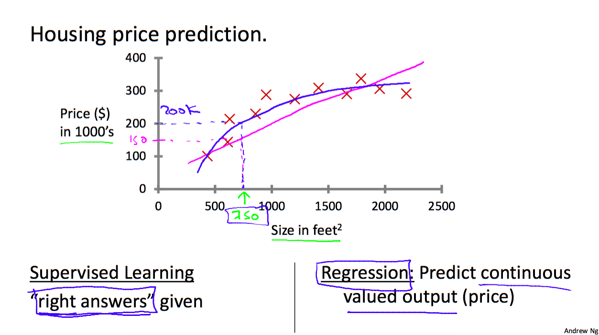
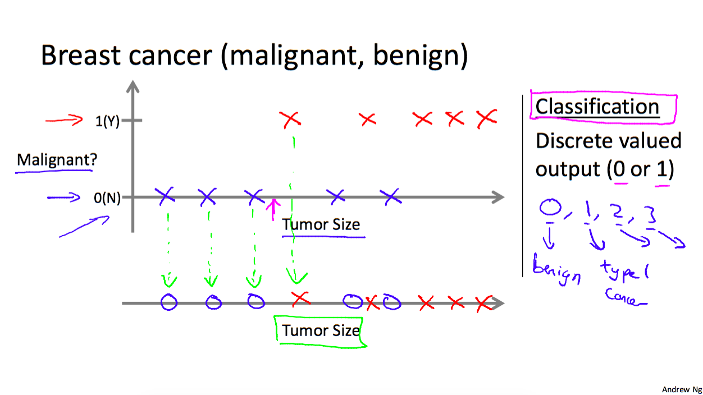
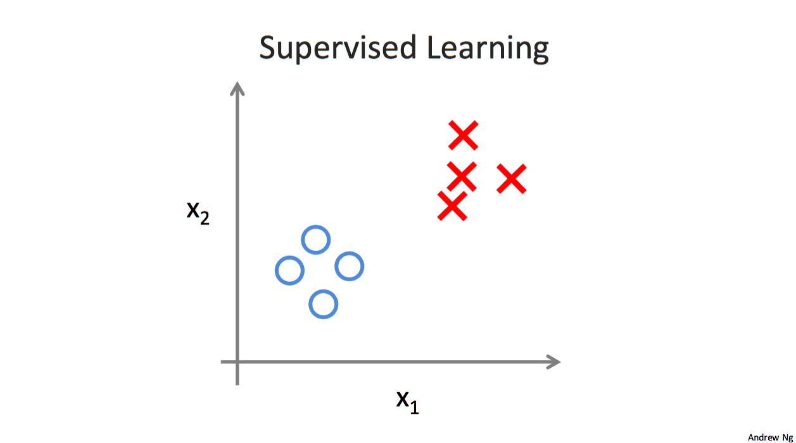

补充无监督学习；
1. Machine Learning定义
The field of study that gives computers the ability to learn without being explicitly programmed.
2. Machine Learning分类
In general, any machine learning problem can be assigned to one of two broad classifications: Supervised learning and Unsupervised learning.
2.1 Supervised learning 监督学习
监督学习从给定的训练数据集中学习出一个函数，当新的数据到来时，可以根据这个函数预测结果。
监督学习的训练集要求是包括输入和输出，也可以说是特征（feature）和目标（target）。
监督学习可以分类为regression和classification问题：区分在于预测结果是连续的还是离散的。
- Regression 回归
In a regression problem, we are trying to predict results within a continuous output, meaning that we are trying to map input variables to some continuous function.
Example : Given a picture of a person, we have to predict their age on the basis of the given picture

- Classification 分类
In a classification problem, we are instead trying to predict results in a discrete output. In other words, we are trying to map input variables into discrete categories.
Example : Given a patient with a tumor, we have to predict whether the tumor is malignant or benign.

2.2 Unsupervised learning 无监督学习
无监督学习与监督学习相比，不同之处在于训练集中只有数据，没有目标（target），需要从中学习出某些信息。
